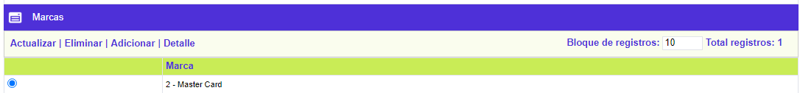
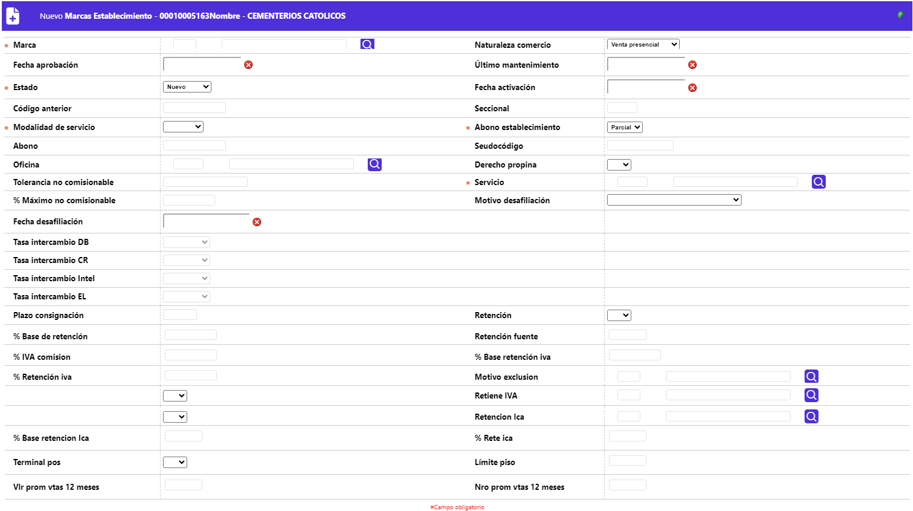
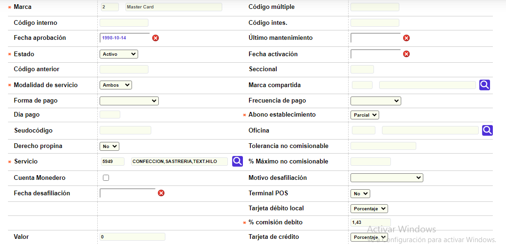

Información de establecimientos - Marcas |
Desde este formulario, que se invoca mediante el hipervínculo Marcas contenido en el formulario de Información de establecimientos, se registran las diferentes marcas habilitadas para el establecimiento y para cada una de ellas se parametrizan las condiciones de liquidación de la comisión, vinculación y estado del establecimiento, si es o no sujeto a efectuarle la retención en la fuente, y de poseer el derecho de cobrar propina, las estipulaciones bajo las que aplican.

El formulario contiene las opciones Actualizar, Eliminar, Adicionar y Detalle.
Adicionar: si el usuario invoca la opción Adicionar se despliega un nuevo formulario con los siguientes campos:

Descripción de campos
Marca |
Campo obligatorio con lista de valores de la cual se selecciona cada una de las diferentes franquicias autorizadas para el establecimiento y para la cual aplican las demás condiciones definidas en este formulario. |
Código múltiple |
En este campo se registra el código de identificación del establecimiento, adicional al código único, que viaja en la cinta de cargue de establecimientos. |
Código interno |
Campo en el cual se registra el código que identifica al establecimiento exclusivamente ante la marca American Express. |
Código intes |
Permite ingresar el código que identifica al establecimiento exclusivamente ante la marca Diners. |
Fecha aprobación |
Campo en formato YYYY-DD-MM en el que se registra la fecha de aprobación de la solicitud de afiliación al operador (franquicia) y asignación del código único. |
Ultimo mantenimiento |
En este campo en formato YYYY-DD-MM se registra la fecha en la cual se hizo la última visita realizada al establecimiento por parte del operador de la franquicia. Aplica en especial para credibanco - visa |
Estado |
Campo obligatorio tipo combo en el que se selecciona entre Desafiliado, Inactivo, Activo o Nuevo la condición en que se encuentre el establecimiento respecto de la marca o franquicia. |
Fecha activación |
En este campo en formato YYYY-MM-DD, no obligatorio, se registra la fecha más reciente de la activación del establecimiento. |
Código anterior |
Campo alfanumérico de 11 dígitos, no obligatorio, en el que se registra el anterior código asigando al establecimiento, en caso que lo hubiere, por ejemplo cuando se ha modificado la codificación. |
Seccional |
Este campo alfanumérico de dos dígitos, no obligatorio, se utiliza para facilitar un agrupamiento o sectorización de los comercios de una cadena. |
Modalidad de servicio |
Campo obligatorio tipo combo del cual se puede seleccionar entre Ventas, Avances o Ambos el indicador del tipo de servicio autorizado al establecimiento. |
Marca compartida |
Cuando un establecimiento tiene un producto de marca compartida con la entidad, en este parámetro se indica el grupo de afinidad asociado a dicho producto y que permite enrutar la información contable que viaja en las interfases. |
Forma de pago |
Campo tipo combo en el que se puede seleccionar entre Cuenta ahorros, Cuenta corriente o Cuenta rotativa el tipo de cuenta a la cual se deben hacer los abonos al establecimiento. |
Frecuencia de pago |
En este campo tipo combo se selecciona entre Diario, Semanal, Quincenal, Mensual, Otro la frecuencia con la cual se deben hacer los abonos al establecimiento. |
Día de pago |
Cuando en el campo anterior se ha seleccionado Otro, aquí se indica el número de días que debe transcurrir desde la fecha de la transacción para hacer el abono a la cuenta del establecimiento. |
Abono establecimiento |
En este campo obligatorio tipo combo se selecciona entre Total y Parcial para indicar si de las consignaciones realizadas solamente se aplica o abona a la cuenta de depósitos, el valor correspondiente a las transacciones de consumo que han superado exitosamente todas las validaciones (Parcial), o si por el contrario, se le abona el Total de la mismas y en caso de presentarse inconvenientes se realizará el ajuste a la cuenta por el respectivo monto. |
Pseudocódigo |
Algunos de los procesadores, canalizan las operaciones de adquirencia de los establecimientos a través de un código (asignado por éste) como mecanismo de seguridad. Este campo permite registrar el código perteneciente al establecimiento, el mismo que permite llegar y afectar la cuenta ya sea corriente o de ahorros de cada comercio. |
Oficina |
Campo que contiene lista de valores de la cual se puede seleccionar la sucursal para la cual se desea asociar el código único de establecimiento y de esta manera disponer de información sobre los avances en efectivo gestionados es estas. |
Derecho propina |
En este campo tipo combo se selecciona entre Si o No el establecimiento de acuerdo con el tipo de servicio prestado está autorizado para el cobro de propina. |
Tolerancia no comisionable |
Campo numérico de 18 dígitos no obligatorio, en el que se registra el valor absoluto máximo acordado entre el emisor y el operador (franquicia) en que puede excederse el monto de comisión cobrado. Si no se define un valor para el establecimiento, el sistema asigna el valor que por defecto presente el tipo de servicio o en su ausencia el valor determinado por la franquicia. |
Servicio |
Campo obligatorio con lista de valores de la cual se selecciona el tipo de servicio correspondiente al nombre del principal servicio o producto ofrecido por el establecimiento. |
Motivo desafiliación |
Este campo tipo combo, permite seleccionar el motivo de desafiliación correspondiente a la razón o causal por la cual un establecimiento es separado o excluido de la marca o franquicia, la que también puede ser voluntaria. |
Fecha desafiliación |
Campo en formato YYYY-MM-DD en el que se registra la fecha en la cual el establecimiento de desafilió de la marca. |
Terminal POS |
En este campo se indica si el establecimiento posee o no P.O.S. para realizar o tramitar las transacciones. |
Tarjeta débito local / Crédito / Inteligente / Electron |
Cada uno de estos campos tipo combo, permite seleccionar de manera excluyente si la comisión que la entidad emisora de la tarjeta le va a cobrar al establecimiento por el uso de cada tipo de tarjeta corresponde a un Valor fijo, un Porcentaje sobre el valor de la transacción o Mixto, es decir, un valor fijo más un porcentaje adicional. |
% Comisión débito / Crédito / Inteligente / Electron |
Si el tipo comisión para un tipo de tarjeta se ha definido como Porcentaje o Mixto, en este campo de 3 enteros y 2 decimales se registra la proporción a aplicar sobre la transacción para determinar el monto de comisión para la entidad. |
Valor |
Cuando el tipo comisión se define como Valor o Mixto, en este campo de 14 enteros y 2 decimales se registra el valor fijo a cobrar al establecimiento por cada transacción, a modo de comisión para la entidad. |
Plazo consignación |
En este campo numérico de tres dígitos no obligatorio, se registra el número máximo de días hábiles de que dispone el establecimiento para realizar las consignaciones de los comprobantes manuales o no electrónicos. |
% Máximo no comisionable |
Campo numérico de 3 enteros y dos decimales, no obligatorio, en el que se registra el valor porcentual máximo o tope para el cobro de propina, determinado inicialmente por la franquicia; el valor que exceda dicho tope, no será considerado como propina y sumará para aumentar la base sobre la cual se cobra la comisión al establecimiento. Si no se define un valor para el establecimiento, el sistema asigna el valor que por defecto presente el tipo de servicio o en su ausencia el valor determinado por la franquicia. |
Actualizar: si el usuario selecciona un registro e invoca la opción Actualizar se despliega un formulario en el cual el único campo NO modificable es la marca.

Detalle: si el usuario selecciona un registro e invoca la opción Detalle se despliega un formulario con la información completa del registro y en el cual ninguno de sus campos es modificable.